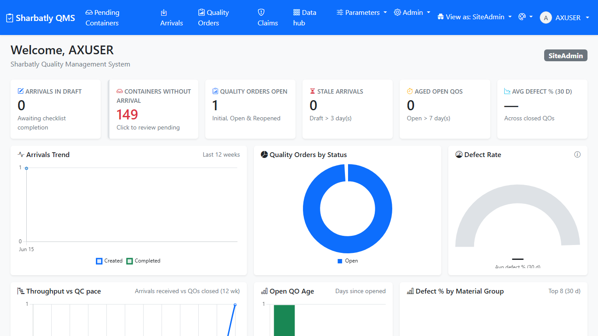
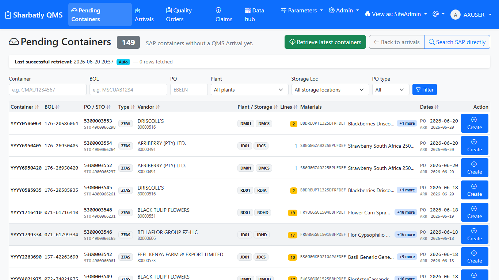
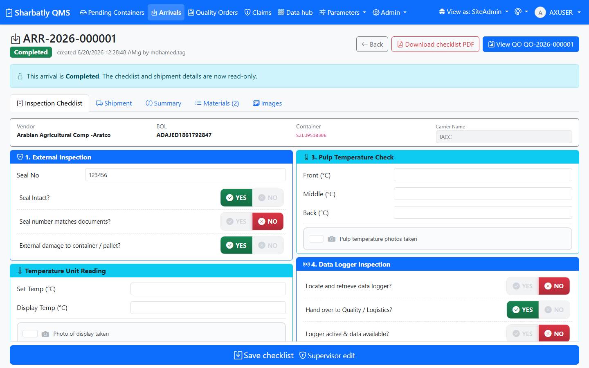
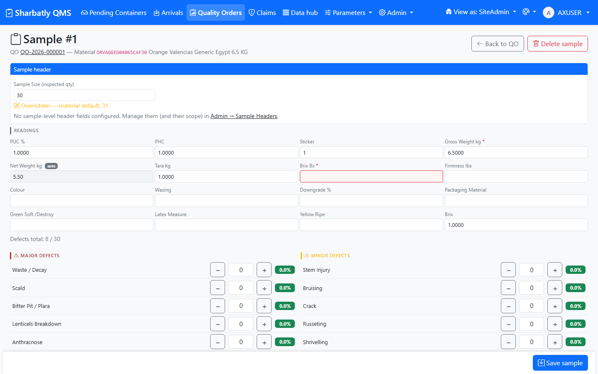
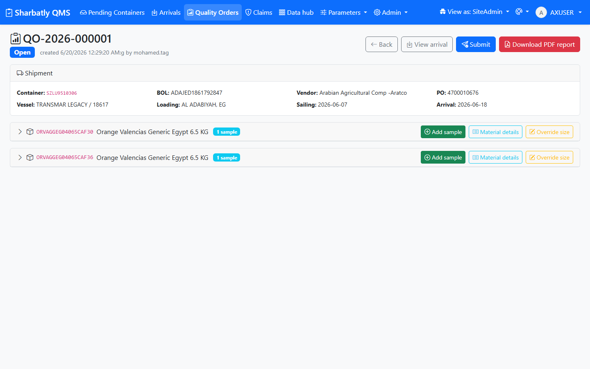

Sharbatly QMS — Arrival & Quality Order Guide
1. Overview
This short guide covers the two main jobs you do every day in Sharbatly QMS:
- The Arrival — turn a container that SAP says has arrived into an inspection record: fill in the seal, temperatures and photos, then open a Quality Order.
- The Quality Order (QO) — inspect samples from that container, record every defect and measurement, add photos, send it to a supervisor to Finish, and produce the printed PDF report.
The two jobs run one after the other: an Arrival is completed first, and the Quality Order is opened from it. Everything you inspect on the floor is recorded against the Quality Order.
---
2. Getting started
2.1 Signing in

Steps
- Open the app in your web browser: http://192.168.3.17:5244.
- Type your Username and Password (the same ones you use to log in to your work computer).
- Click Sign in.
ahmed.ali) with no @ and no domain in front. If it still won't let you in, ask an administrator to check your account.---
3. The Arrival process
An Arrival is one container of fruit. You create it from the list of containers SAP has told the app about, fill in what you see at the cold store, and then open a Quality Order on it.
3.1 Step 1 — Pick your container from Pending

Steps
- Click Pending Containers in the top menu.
- Find your container in the list. If it isn't there yet, click Retrieve latest containers at the top — a small status line tells you when the fresh list has come back from SAP.
- If the list is long, type the container number, BOL, or PO in the filter boxes to narrow it down.
- Click the row of the container you want.
3.2 Step 2 — Fill and save the container checklist

Steps
- On the Arrival details page, fill in the seal number and tick Seal intact if it was.
- Tick External damage if there was any visible damage to the container.
- Type the discharge date (the day the container was discharged) next to the arrival date.
- Type the three pulp temperatures — front, middle and back.
- If there is a data logger, type its serial number and tick the box to say its photo was taken.
- Add a short note if anything is unusual.
- Add photos with Add photo — you can drag a picture in, browse for a file, or take one with the camera.
- Click Save.
3.3 Step 3 — Complete the arrival and open a Quality Order
Steps
- When the checklist is complete, click Complete (or Create Quality Order) at the top of the Arrival.
- Confirm if the app asks you to.
---
4. The Quality Order process
The Quality Order (QO) is where you record the inspection: one or more samples, the defects and readings on each, and the photos. When you're done you send it to a supervisor to Finish, and you can print the PDF report.
4.1 Step 1 — Add a sample

Steps
- On the Quality Order, click Add sample.
- Choose the Sample scope — One Carton or Multi-Carton.
- Check the Sample size — it fills in automatically from the material, but you can change it if you counted a different number.
- Fill in the sample details you have (grower, pallet, etc.) if your team records them.
- Click Save sample.
4.2 Step 2 — Record readings and defects
Steps
- Open the sample you want to record against.
- Type the readings you measured — Brix, firmness and so on. The list only shows the readings that apply to this kind of fruit.
- Type the count for each defect you found. Leave a defect at zero if you didn't see it.
- Add photos of the defects — drag, browse, or use the camera. The photo count on the sample updates straight away.
- Click Save sample.
4.3 Step 3 — Complete the material header

Steps
- Look at the Material header button on the Quality Order — it glows yellow until the header details are complete.
- Click it and fill in the required header fields for the material.
- Click Save.
4.4 Step 4 — Submit for review
Steps
- Make sure every sample you meant to inspect is saved, and the Material header is complete.
- Click Submit for review at the top of the Quality Order.
- Type a short note to the supervisor if you'd like.
- Click Confirm.
4.5 Step 5 — Finish the Quality Order (Supervisor)
Steps
- Open a Submitted Quality Order.
- Review every sample and the operator's note.
- If everything is correct, click Finish — the Quality Order becomes Closed.
- If something needs fixing, click Cancel submission — the order goes back to Open so the operator can correct it.
4.6 Step 6 — Generate the PDF report
Steps
- Open the finished (Closed) Quality Order.
- Click Download PDF (or Quality Report) at the top.
- The report opens as a PDF — it shows the shipment details, the Time Bar, every sample with its readings and defects, and the photos.
- Save or print it as you need.
- To e-mail it to the supplier, click Send report to supplier instead — the message is pre-filled; edit it if you want and click Send.
---
5. Troubleshooting & FAQ
I can't find my container in Pending Containers.
It probably hasn't been fetched from SAP yet. Click Retrieve latest containers at the top of the Pending page and wait for the status line to say it's done, then look again.
The "Create Quality Order" button is greyed out.
The Arrival has to be Completed first. Finish the checklist, click Save, then Complete the arrival.
The form won't let me save my defects.
The total of all defect counts on a sample can't be larger than the sample size. Recount, or lower a number, then save.
I can't edit a sample any more.
Once a Quality Order is Submitted, samples are locked. Ask a supervisor to Cancel submission — that returns it to Open so you can edit again.
The Material header button is glowing yellow.
That means the header isn't complete yet. Click it, fill in the fields, and Save. You can't submit until it's done.
How do I print the report?
Open the finished Quality Order and click Download PDF. The report opens in your browser where you can save or print it.
---
6. Glossary
- Arrival
- one container of fruit, from the moment it arrives until its inspection is recorded.
- Checklist
- the seal, temperature, logger and photo record you fill in on the Arrival.
- Quality Order (QO)
- the inspection for an arrival: its samples, defects, readings and photos.
- Sample
- one inspected unit (a carton, or a set of cartons) within a Quality Order.
- Reading
- a measurement such as Brix or firmness.
- Defect
- a fault you count on a sample (for example bruising or decay).
- Material header
- the material-level details that must be completed before a Quality Order can be submitted.
- Submitted
- the state a Quality Order is in after an operator sends it for review; samples are locked.
- Closed / Finished
- the state after a supervisor accepts the Quality Order; the report can now be produced.
- Time Bar
- the number of days from the discharge (or arrival) date to the day the Quality Order was finished, shown on the report.